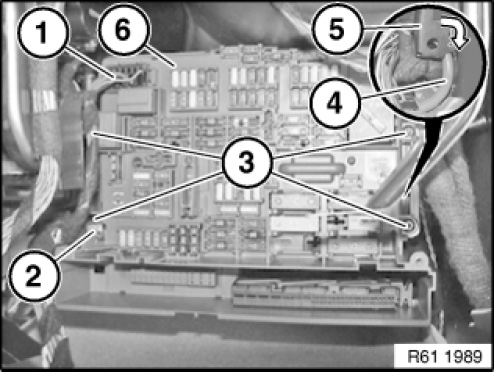
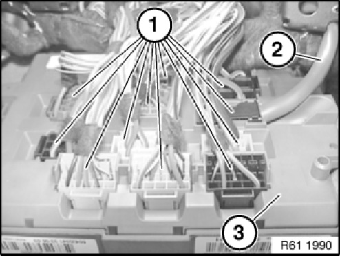

61 13 050 Removing and Installing/Replacing Fuse Box In Passenger Compartment
61 13 050 Removing And Installing Or Replacing Fuse Box In Passenger Compartment (Built After 03/2007)

IMPORTANT: Read and comply with notes on handling wiring harnesses and cables.

Necessary preliminary tasks:
- Remove right glove box with housing
- Remove Junction box

Disconnect plug connection (1).
Release wiring harness mount (2) from fuse box interior (6).
Release screws (3).
IMPORTANT:
Risk of damage.
Carefully fold passenger compartment fuse box (6) forwards, feeding positive battery cable (4) in direction of arrow out of passenger compartment fuse box bracket (5).

Disconnect all plug connections (1) on reverse side of fuse box interior (3).
Remove fuse box interior (3).
Installation note:
Battery positive lead (2) must not be damaged.
Make sure wiring harnesses are correctly laid and plug connections (1) are correctly latched.

Replacement:
If necessary, remove fuses and relays.